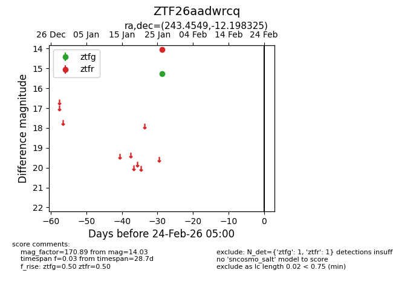
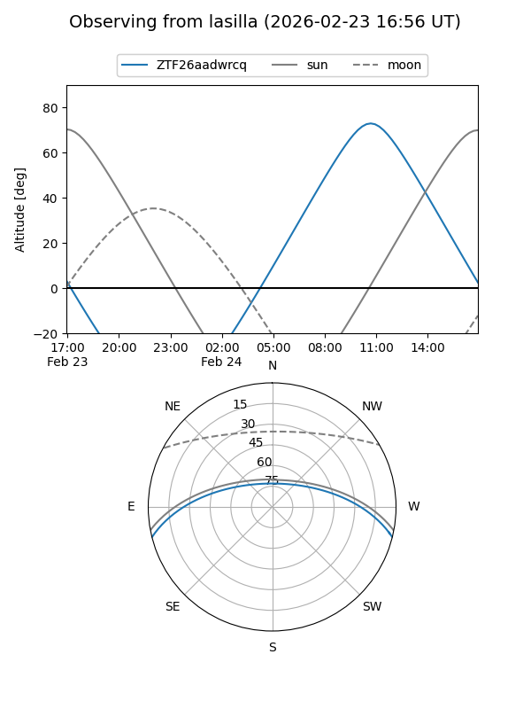
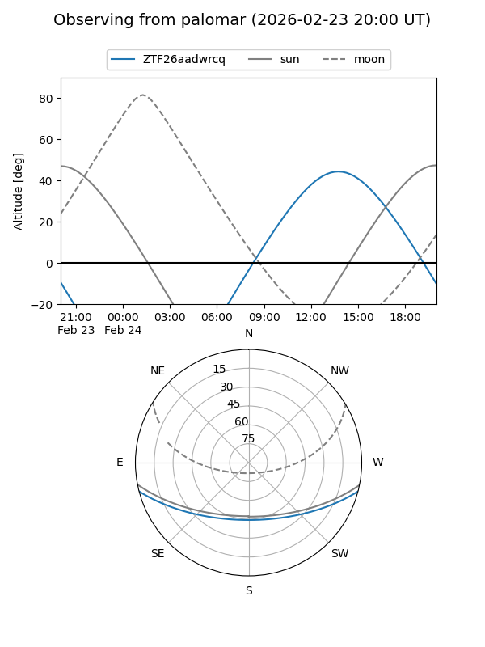

ZTF26aadwrcq
Target ZTF26aadwrcq at 2026-01-28 14:26
Aliases and brokers:
FINK: link
Lasair: link
ALeRCE: link
alt names
ZTF26aadwrcq (ztf,fink_ztf)
Coordinates:
equatorial (ra, dec) = 243.4549,-12.19833
equatorial (HMS+DMS) = 16:13:49.17,-12:11:53.97
galactic (l, b) = (0.9840,+27.11994)
Flags:
Photometry:
last ztfg=15.26, ztfr=14.03
1 ztfg, 1 ztfr detections
Lightcurve

Visibility


Additional plots